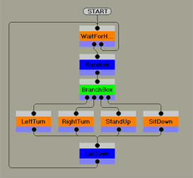
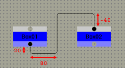

|
|
Master Studio
Behavior File
Format
Contents of this website are freeware and/or copyrighted material, and may not be sold
under any circumstances.
Email: dogsbody@dogsbodynet.com
Home:
https://dogsbodynet.com
Table
of Contents
- Introduction
- Behavior Codes
- Connections
- Example
1.
Introduction
Master Studio Behavior Arrange (BA) files are text based -- you can
open them in Notepad. Each line starts with a character or
word indicating what follows. All parameters are separated
by colon ( : ) characters.
Behaviors are organized into frames or pages. A single
behavior file can have dozens or hundreds of frames.
Behavior Arranger shows each frame on its own editor page.
Group boxes are used to reference frames within another, creating a
hierarchy of sorts. Frames always have a single entry
point,
but can have multiple exit points (or none at all).
|

|
2. Behavior Codes
Code
|
Description
|
| AMS |
Behavior Arranger Version
- "BA" (always)
- "1.1" (version of Behavior Arranger which created
file)
Example:
|
| F |
New frame declaration
- Frame Number
- Frame Name (quoted)
- Window horizontal X screen coordinates
(with Open All Groups
command)
- Window vertical Y screen coordinates (with Open All Groups command)
- Window horizontal size in pixels (with Open All Groups command)
- Window vertical size in pixels (with Open All Groups command)
- Always 0
- Always 0
- Workspace horizontal size in pixels
- Workspace vertical size in pixels
- Flags. If bit0 set, frame opened
in own window.
Example:
F40000:"M_StandUp:Main":0:0:960:729:0:0:1112:739:208:
|
|
S
|
Entry Terminal. Tells Master
Studio where AIBO should first start within the frame.
- Block Number
- Block Name (quoted)
- Block horizontal workspace coordinate in grid units
- Block vertical workspace coordinate in grid units
- Block horizontal size in grid units
- Block vertical size in grid units
- Connection info (see section 3)
- Always 0
- Comments (quoted)
Example:
S40001:"START":200:50:80:20:40003,99999999,99999999,99999999:0:
|
|
| T |
Exit Terminal. Tells Master
Studio to leave this frame & resume in previous frame.
- Block Number
- Block Name (quoted)
- Block horizontal workspace coordinate in grid units
- Block vertical workspace coordinate in grid units
- Block horizontal size in grid units
- Block vertical size in grid units
- Always 0
- Always 0
- Comments (quoted)
Example:
T40002:"END":200:200:80:20:0:0:
|
|
| A |
Action Block. Contains lists
of commands for AIBO to perform. It's parameters are as follows:
- Block Number
- Block Name (quoted)
- Block horizontal workspace coordinate in grid units
- Block vertical workspace coordinate in grid units
- Block horizontal size in grid units
- Block vertical size in grid units
- Connection info (see section 3)
- Always 0
- Comments (quoted)
- Optional. Path to background bitmap file
(quoted)
Zero or more optional lines of R-Code commands can follow, which start
with ">" continuation
characters. The
R-Code commands are composed of:
- Two colon seperated keywords (the second if which can
be blank)
- Five operands (variables, numbers, etc...).
Unused operands are blank.
- A field that's always 0
- Comment
Example:
A40003:"STAND":200:110:100:60:40002,99999999,99999999,99999999:0:
>PLAY:ACTION:STAND:::::0:
>WAIT:::::::0:
|
|
| B |
Branch
Block. Contains
lists of tests, so control can go down different paths.
- Block Number
- Block Name (quoted)
- Block horizontal workspace coordinate in grid units
- Block vertical workspace coordinate in grid units
- Block horizontal size in grid units
- Block vertical size in grid units
- Always 0
- Always 0
- Comment (quoted)
- Optional. Path to background bitmap file
(quoted)
Zero or more optional lines of branch statements follow, which start
with ">" continuation
characters. The branch statements are composed of:
- Test Command (IF/AND/OR/ELSE)
- Variable
- Operator (=, <>, >, >=, <. <=, or
Bit)
- Variable or Number
- Name of connected block
- Two blank fields
- Connection info (see section 3)
- Comment
Example:
B10004:"Branch":330:230:100:60:0:0:
>IF:a:=:1:LeftTurn:::10005,99999999,99999999,99999999:
>IF:a:=:2:RightTurn:::10007,99999999,99999999,99999999:
>IF:a:=:3:StandUp:::10008,99999999,99999999,99999999:
>ELSE::::SitDown:::10009,99999999,99999999,99999999:
|
|
| G |
Group Block.
Transfer control to another frame. On return, control can
go down different paths.
- Block Number
- Block Name (quoted)
- Block horizontal workspace coordinate in grid units
- Block vertical workspace coordinate in grid units
- Block horizontal size in grid units
- Block vertical size in grid units
- Always 0
- Frame number to receive control
- Comment (quoted)
- Optional. Path to background bitmap file
(quoted)
Zero or more optional lines of return statements follow, which start
with ">" continuation
characters. The branch statements are composed of:
- Name of exit terminal (from called frame)
- Three blank fields.
- Name of connect block
- Two blank fields
- Connection info (see section 3)
- Comment
Example:
G10002:"WaitForHeadTouch":330:80:100:60:0:60000:
>Head_ON::::Random:::10003,99999999,99999999,99999999:
>Head_OFF:::::::10002,99999999,60,99999999:
|
|
| > |
Continuation line. Used
by Action, Branch
& Group blocks (see above).
|
//
|
Program comments.
|
| [ |
Platform model & language.
ie: [ERS-210(E)] (AMS 1.1
only) |
Any line not starting with one of the above is ignored.
3.
Connections
Connections between blocks are tracked by block numbers -- the
value
immediately following a start-of-line character. For
example, the connection below means jump to block number 10001.
10001,99999999,99999999,99999999
|
The three comma seperated values following the block number are
Behavior Arranger guide information for drawing connection
lines. All 9's means use the default routing.
Click-n-drag a connection line, and these values get initialized.
The three values are:
- Vertical distance from bottom of starting block (in
grid units), for a horizontal line.
- Horizontal distance from center of starting block (in
grid units), for a vertical line.
- Vertical distance from top of ending block (in grid
units), for a second horizontal line.
For example, the image (to right) shows the connection:
"10002,20,80,-40"
|
 |
4.
Example
AMS:BA:1.1
[ERS-210(E)]
|
F10000:"Main":1:0:960:729:0:0:1172:739:208:
S10001:"START":330:30:80:20:10002,99999999,99999999,99999999:0:
G10002:"WaitForHeadTouch":330:80:100:60:0:60000:
>Head_ON::::Random:::10003,99999999,99999999,99999999:
>Head_OFF:::::::10002,99999999,60,99999999:
A10003:"Random":330:160:100:60:10004,99999999,99999999,99999999:0:
>RND::a:1:4:::0:Pick random number between 1 and 4
B10004:"BranchBox":330:230:100:60:0:0:
>IF:a:=:1:LeftTurn:::10005,99999999,99999999,99999999:
>IF:a:=:2:RightTurn:::10007,99999999,99999999,99999999:
>IF:a:=:3:StandUp:::10008,99999999,99999999,99999999:
>ELSE::::SitDown:::10009,99999999,99999999,99999999:
G10005:"LeftTurn":150:320:100:60:0:20000:
>END::::LieDown:::10006,99999999,99999999,99999999:
A10006:"LieDown":330:410:100:60:10002,99999999,-250,99999999:0:
>PLAY:ACTION:LIE:::::0:Make AIBO lie down
>WAIT:::::::0:
G10007:"RightTurn":270:320:100:60:0:30000:
>END::::LieDown:::10006,99999999,99999999,99999999:
G10008:"StandUp":390:320:100:60:0:40000:
>END::::LieDown:::10006,99999999,99999999,99999999:
G10009:"SitDown":510:320:100:60:0:50000:
>END::::LieDown:::10006,99999999,99999999,99999999:
|
F20000:"M_LeftTurn:Main":44:44:960:729:0:0:1112:739:208:
S20001:"START":200:50:80:20:20003,99999999,99999999,99999999:0:
T20002:"END":200:170:80:20:0:0:
A20003:"LEFT_TURN":200:90:100:60:20002,99999999,99999999,99999999:0:
>PLAY:ACTION:TURN:90::::0:
>WAIT:::::::0:
|
F30000:"M_RightTurn:Main":66:66:960:729:0:0:948:623:208:
S30001:"START":200:50:80:20:30003,99999999,99999999,99999999:0:
T30002:"END":200:200:80:20:0:0:
A30003:"RIGHT_TURN":200:90:100:60:30002,99999999,99999999,99999999:0:
>PLAY:ACTION:TURN:-90::::0:
>WAIT:::::::0:
|
F40000:"M_StandUp:Main":0:0:960:729:0:0:1112:739:208:
S40001:"START":200:50:80:20:40003,99999999,99999999,99999999:0:
T40002:"END":200:200:80:20:0:0:
A40003:"STAND_UP":200:110:100:60:40002,99999999,99999999,99999999:0:
>PLAY:ACTION:STAND:::::0:
>WAIT:::::::0:
|
F50000:"M_SitDown:Main":0:0:960:729:0:0:948:623:208:
S50001:"START":200:50:80:20:50003,99999999,99999999,99999999:0:
T50002:"END":200:200:80:20:0:0:
A50003:"SIT_DOWN":200:100:100:60:50002,99999999,99999999,99999999:0:
>PLAY:ACTION:SIT:::::0:
>WAIT:::::::0:
|
F60000:"S_WaitUntilHeadTouched:Main":69:400:960:729:0:0:1112:739:208:
S60001:"START":200:50:80:20:60003,99999999,99999999,99999999:0:
T60002:"Head_ON":190:400:80:20:0:0:
B60003:"Head_ON?":200:130:100:60:0:0:
>IF:Head_ON:=:1:INIT:::60004,99999999,99999999,99999999:
>ELSE::::WAIT:::60005,99999999,99999999,-10:
A60004:"INIT":190:250:100:60:60002,99999999,99999999,99999999:0:
>SET::Head_ON:0::::0:
A60005:"WAIT":330:250:100:60:60006,99999999,99999999,99999999:0:
>WAIT:100::::::0:
T60006:"Head_OFF":330:400:80:20:0:0:
|
H10000:1
|
Download Example
|
|